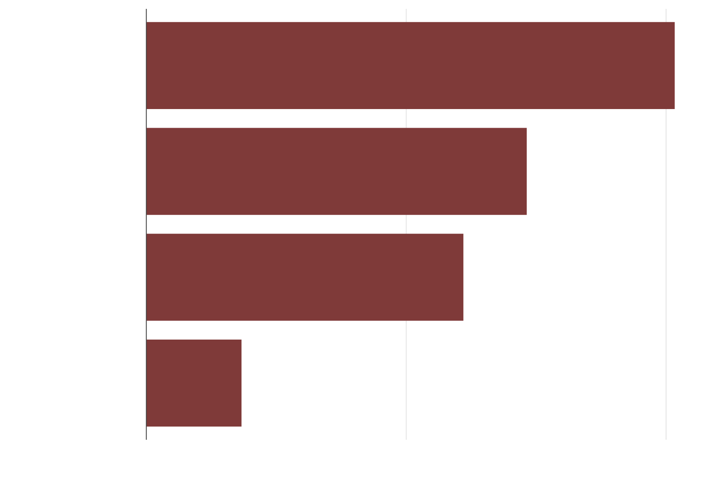
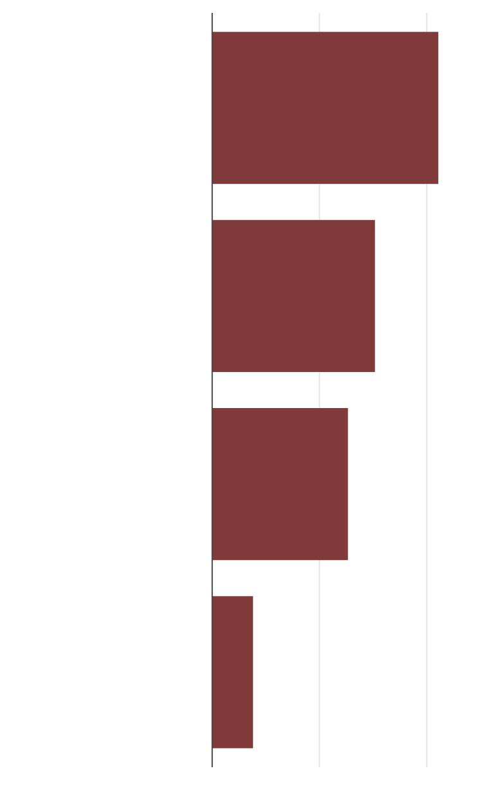

Access denied: Duterte's freedom of information hardly makes gov't accountable
FOI has improved information access. But gov't has also kept sensitive ones under wraps
April 17, 2022
When Philippine President Rodrigo Duterte signed an executive order on Freedom for Information (FOI) shortly after he was elected in 2016, his spokesperson, Martin Andanar, said that
“contracts involving the use of public funds will be made available” to the public.
Nearly six years since the FOI was institutionalized, however, not only are contents of most government contracts still inaccessible to the public,
but previously available documents like annual filings that reveal how much public officials are worth have likewise become difficult to obtain, even for members of the media.
Such is the irony of Duterte's FOI order, supposedly an answer to decades of public clamor for transparency in a government consistently haunted by accusations of corruption.
The bad news is this is not easily obvious in the data, which broadly would show an impressive record.
Since 2016, over 110,000 FOI requests had been filed, of which 40% were tagged “successful,” indicating that the requested information was provided.
Only about one in four requests was denied, while the rest were at varying levels of clearance as of April 10.
Less than half of FOI requests get approved
Status of FOI requests since 2016 as of April 10

Successful
Pending
Denied
Partially successful
0
20
40 %

Successful
Pending
Denied
Partially successful
0
20
40
Sources: FOI portal, Presidential Communications Office
But headline numbers do not tell the whole story.
For instance, over 370 requests for Statements of Assets, Liabilities and Net Worth (SALN) of various public officials including President Duterte and his Cabinet were made since 2016 until April 10 this year.
Of those, only a tenth was granted, majority by Vice President Leni Robredo, who belongs to the opposition.
FOI requests for Duterte's SALN, some going as early as 2016, have remained unacted upon.
SALN denials
Denied
requests
7 out of 9
SALN requests
were denied
100 %
of requests
80
60
Over one in five
requests for SALN
still being denied
40
20
0
2017
2018
2019
2020
2021
Denied
requests
SALN denials
100 %
of requests
7 out of 9
SALN requests
were denied
80
60
40
Over one in five
requests for
SALN denied
20
0
2017
2018
2019
2020
2021
The number of FOI requests getting denied have been on a declining trend.
But looking closely, some of the most important requests that seek government accountability are getting denied.
This includes the Statements of Assets Liabilities and Net Worth (SALN).
By law, public officers are required to make their SALN accessible to the public.
But in the past five years, there were nearly three times more the number of denials for SALN than average.
In 2018 alone, nearly all of SALN requests filed through the FOI portal had been denied.
While the number of FOI requests denied had since declined, there were still over one in four requests for SALN that do not get granted.
Requests for copies of government contracts were likewise being blunted, including those made for loan agreements with China, which in 2018 was the subject of a Senate investigation for alleged irregularities,
as well as other multi-billion-peso infrastructure projects. Even feasibility studies for some state projects were being held up.
These included requests for the environmental impact assessment of a contentious proposal to build an elevated tollway across Pasig River in Metro Manila.
Critics said the plan risks massive environmental damage.
In one instance, the transport department approved an FOI request for a copy of a concession agreement governing the Metro Rail Transit-7, a rail project between the government and conglomerate San Miguel Corp.
But when they responded, only an annex of the contract was provided.
“Thank you for providing Annex Q of the Agreement. We were expecting to study the concession agreement as well,” the filer of the request said.
The department no longer responded afterwards.
“When you weave through the noise, requests which the FOI is supposed to be for, in fact, are being rejected,” said Paul Jason Perez, an assistant professor at University of the Philippines, who has done research on FOI.
Part of the problem, Perez said, is that FOI is a presidential order, which makes it inferior to laws that are in direct conflict with its intent. These include data privacy and tax laws, which in essence protect confidential and personal information such as tax records.
Philippine President Rodrigo Duterte signed Executive Order No. 2, Series of 2016 that mandated Freedom of Information in his first month in office in July 2016. Source: Manila Times
Some agreements entered by the government also contain confidentiality provisions that are exempted from FOI.
Chinese loans, which funded billions in infrastructure, used to contain these restrictions before public pressure and a Senate investigation on them forced the government to renegotiate. They had since been made public.
To be continued...
This project is in partial fulfillment of requirements for master of science degree in data journalism at Columbia University.Source code is available here.